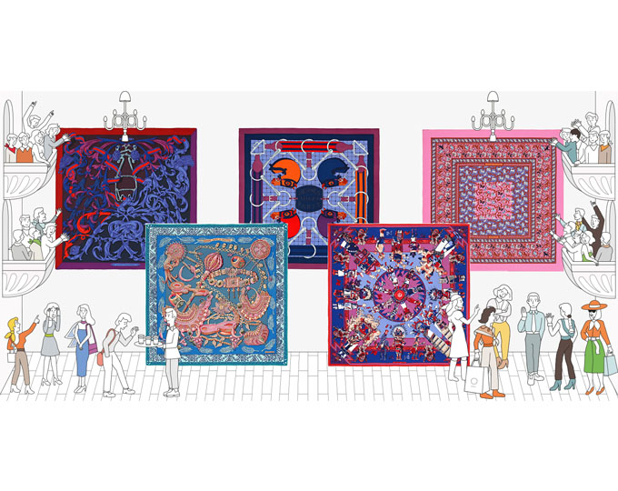
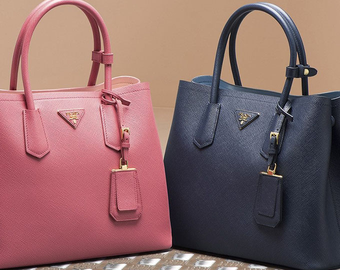

홈 > 브랜드 매거진 > 에르메스
에르메스
에르메스는 속도보다 장인성과 기다림의 가치를 브랜드 경험으로 만든다. 제품은 희소성과 품질을 통해 욕망을 만들지만, 더 깊은 차별성은 쉽게 대체되지 않는 제작 태도와 시간의 감각에 있다.
산업 분야 패션·럭셔리 · 공개 등급 매거진 완성 · 브랜드 평가 5 ★

한눈에 보는 브랜드
에르메스는 속도보다 장인성과 기다림의 가치를 브랜드 경험으로 만든다. 제품은 희소성과 품질을 통해 욕망을 만들지만, 더 깊은 차별성은 쉽게 대체되지 않는 제작 태도와 시간의 감각에 있다.
브랜드 관점
에르메스는 속도보다 장인성과 기다림의 가치를 브랜드 경험으로 만든다. 제품은 희소성과 품질을 통해 욕망을 만들지만, 더 깊은 차별성은 쉽게 대체되지 않는 제작 태도와 시간의 감각에 있다.
시작과 성장
에르메스는 프랑스 럭셔리 패션 브랜드로 1837년 티에리 에르메스(Thierry Hermes)가 설립했다. 말에 필요한 용품을 취급하는 마구상으로 시작한 에르메스는 오늘날 최상의 품질을 인정받는 세계적인 명품 브랜드로 자리매김했다.
브랜드 아이덴티티
마케팅 부서가 없다고 알려진 에르메스는 마케팅 대신 그들의 장인 정신을 브랜드 전면에 내세우고 있다. 에르메스의 브랜딩 활동 역시 장인들의 공방을 중심으로 운영되고 있으며, 에르메스는 예술에 대한 애정을 보여주는 다양한 프로그램과 전시를 기획하고 있다.
제품과 서비스
에르메스의 제품들은 희소성이 높아 명품 중의 명품으로 여겨진다. 최초로 가방에 지퍼를 단 볼리드 백부터 유명 명사의 이름을 차용한 켈리 백, 버킨 백은 에르메스의 시그니처 아이템으로 자리 잡았다.
또한, 에르메스의 실크 스카프는 뛰어난 디자인으로 단순한 패션 아이템을 넘어 예술 작품으로 여겨지고 있다.
현재 상태
타임라인
BI/CI 변천사
함께 읽을 브랜드
 패션·럭셔리 · 편집 검수젠틀몬스터
패션·럭셔리 · 편집 검수젠틀몬스터젠틀몬스터는 2011년 서울에서 김한국이 창립한 한국 럭셔리 아이웨어 브랜드입니다. 선글라스와 안경테를 중심으로 전개하며, 서울 기반의 아이아이컴바인드가 운영합니다....

패션·럭셔리 · 매거진 완성프라다프라다는 아름다움을 익숙한 화려함보다 지적인 긴장감으로 표현하는 브랜드다. 소재와 형태, 절제된 색감은 패션을 단순한 장식이 아니라 관찰과 해석의 대상으로 만든다.
 패션·럭셔리 · 편집 검수구찌
패션·럭셔리 · 편집 검수구찌구찌는 이탈리아의 패션·럭셔리 브랜드로, 소재, 실루엣, 로고, 컬렉션 운영이 취향과 지위 신호를 만드는 영역입니다.
 패션·럭셔리 · 편집 검수까르띠에
패션·럭셔리 · 편집 검수까르띠에까르띠에는 패션·럭셔리 브랜드로, 소재, 실루엣, 로고, 컬렉션 운영이 취향과 지위 신호를 만드는 영역입니다.
 패션·럭셔리 · 편집 검수누디진
패션·럭셔리 · 편집 검수누디진누디진는 스웨덴의 패션·럭셔리 브랜드로, 소재, 실루엣, 로고, 컬렉션 운영이 취향과 지위 신호를 만드는 영역입니다.
 패션·럭셔리 · 편집 검수랄프 로렌
패션·럭셔리 · 편집 검수랄프 로렌랄프 로렌는 패션·럭셔리 브랜드로, 소재, 실루엣, 로고, 컬렉션 운영이 취향과 지위 신호를 만드는 영역입니다.
 패션·럭셔리 · 편집 검수롤렉스
패션·럭셔리 · 편집 검수롤렉스롤렉스는 스위스의 패션·럭셔리 브랜드로, 소재, 실루엣, 로고, 컬렉션 운영이 취향과 지위 신호를 만드는 영역입니다.
 패션·럭셔리 · 편집 검수버버리
패션·럭셔리 · 편집 검수버버리버버리는 영국의 패션·럭셔리 브랜드로, 소재, 실루엣, 로고, 컬렉션 운영이 취향과 지위 신호를 만드는 영역입니다.